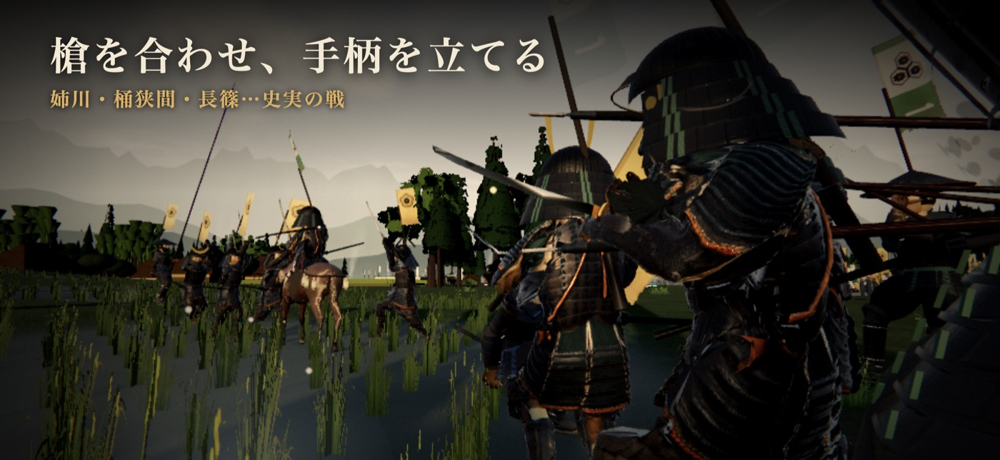

第2戦 永禄
森部の戦い
永禄四年（1561）五月
美濃国 森部
美濃の斎藤勢と戦った、信長の美濃攻めの一戦。
見せ場雨の田で長い槍の列が押し合う。先手を退けても、後ろの二つの備が迫ってくる。
- 味方
- 織田軍
- 敵
- 斎藤軍
- 上役
- 組頭 源八
- 前の城下
- 清洲
- 届く身分
- 足軽組頭候補まで
一任務の流れ
足軽から進む道の主な段です。身分や途中の判断で、任務や通る道が変わります。
- 組を連れて浅瀬を渡り、東の畦で合図を待つ
- 味方の前備と斎藤の先手を押し返す
- 本備の横で槍をそろえ、長井と日比野の寄せを受ける
- 両将の備を崩す
- 深追いを止め、組を集結の旗へ戻す
任務の札の例（選ぶ道で変わります）：
- 渡った先の畦で、組と槍を揃えよ
- 畦で備えをそろえ、法螺貝の合図を待て
- 本備の横で、組と槍をそろえて押し返せ
- 味方と進み、長井と日比野の槍の列を崩せ。大将へ一人で走るな
- 深追いせず、組を集結の旗へ戻せ
- 味方の前備と共に、斎藤の先手を押せ
- 本備の横へ進み、長井と日比野の寄せに備えよ
二勝ち方のこつ
一言の助け先手を退けたら本備の横へ戻り、味方と槍をそろえよう。
- 道すじ：渡河・持ち場・反撃の待ちを、性格の突進で上書きしない。。
- 弓は遠くから射てくる。木や塀の陰を使って近づく。
- 雨の戦。遠くが見えにくいので、任務の印の方角を先に確かめる。
- 任務の札を見て、印の方へ。組を持っていれば「ついて来い」の号令で、一人で突出しない。
三出てくる武将
- 前田利家まえだとしいえ
「槍の又左」と呼ばれた傾奇者。秀吉とは古くからの友人で、加賀百万石の礎を築いた。
史史実
史料とは、昔の記録や書物のことです。下の文で、史料に残る話と、遊びのために補った所を確かめられます。兵の数や細かな場所には、いくつもの説があります。任務を果たすことと、史実の勝ち負けは別です。
信長公記の森部の記事は、五月十四日の雨、墨俣から長井甲斐守・日比野下野守が出たこと、信長が楡俣川を越え、長く槍を合わせたことを記す。両将を含む百七十余人が討たれた。前田利家が足立六兵衛を討ったとも記す。
永禄四年とするのが通説だが、この記事そのものには年の記載がない。織田約千五百、斎藤約六千は伝承上の目安。川の位置や細かな布陣には諸説があり、浅瀬・畦の持ち場・控えの押し出す順は復元である。
三手の細かな配分・将の持ち場・昼の明るさは確定できない。数刻の戦いを短い時間に縮め、見える兵も総勢全員を描くものではない。主人公は上役の下知で自分の槍組を動かす。組の任務失敗は史実の織田軍の敗北を意味しない。